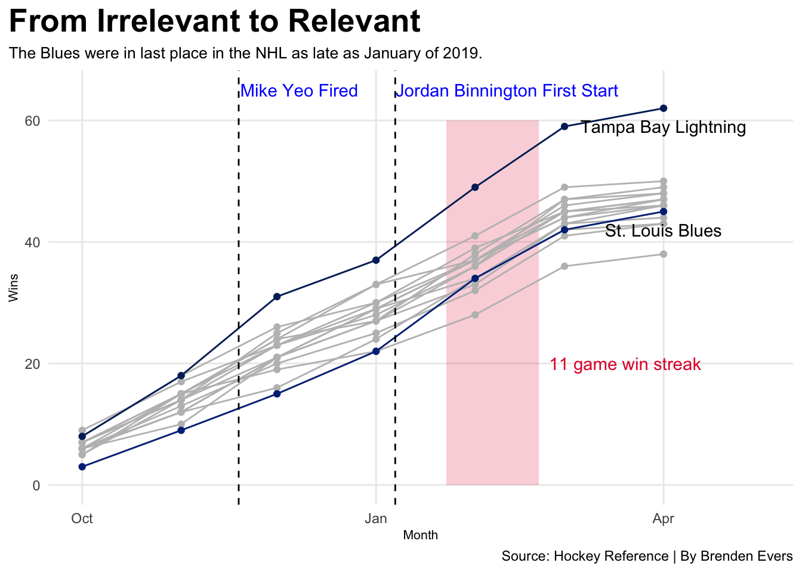

Code
library(tidyverse)
library(janitor)
library(ggplot2)
library(ggrepel)
library(ggalt)
library(patchwork)
library(fastRhockey)
library(lubridate)
library(rvest)
library(ggimage)
NhlLogos <- read_csv("nhl_logos.csv")
HockeyLogs19 <- read_csv("hockeylogs2019.csv") |>
mutate(month = floor_date(date, "month"))
GoalieStats19 <- read_csv("NHL 2018-19 Goalie Stats.csv") |>
filter(GS >= 30) |>
filter(SO >0)
GoalieShutouts <- GoalieStats19 |>
filter(SO >= 4)
GoodGAA <- GoalieStats19 |>
filter(GAA <= 2.48)
JordanB <- GoalieStats19 |>
filter(Player == "Jordan Binnington")
HhlShots <- HockeyLogs19 |>
group_by(team_name) |>
filter(team_name!="St. Louis Blues") |>
summarise(Shots_For = sum(ff/82),
Shots_against = sum(fa/82),
Winz = sum(x_2 == "W")) |>
left_join(NhlLogos, by=c("team_name"="espn_team_name"))
BluezShotztoJan <- HockeyLogs19 |>
group_by(team_name) |>
filter(team_name == "St. Louis Blues", date < as.Date("2019-01-03")) |>
summarise(Games = n(),
Winz = sum(x_2 == "W"),
ff = sum(ff),
fa = sum(fa)) |>
mutate(Shots_For = ff/Games,
Shots_against = fa/Games) |>
left_join(NhlLogos, by=c("team_name"="espn_team_name"))
BluezShotzaftJan <- HockeyLogs19 |>
group_by(team_name) |>
filter(team_name == "St. Louis Blues", date >= as.Date("2019-01-03")) |>
summarise(Games = n(),
Winz = sum(x_2 == "W"),
ff = sum(ff),
fa = sum(fa)) |>
mutate(Shots_For = ff/Games,
Shots_against = fa/Games) |>
left_join(NhlLogos, by=c("team_name"="espn_team_name"))
PlayoffTeams <- c("Tampa Bay Lightning", "Boston Bruins", "Dallas Stars", "Columbus Blue Jackets", "St. Louis Blues", "Colorado Avalanche", "Nashville Predators", "Calgary Flames", "Carolina Hurricanes", "San Jose Sharks", "New York Islanders", "Washington Capitals", "Toronto Maple Leafs", "Pittsburgh Penguins", "Winnipeg Jets", "Vegas Golden Knights")
MonthlyRecord <- HockeyLogs19 |>
group_by(team_name, month) |>
summarize(
Wins = sum(x_2 == "W"),
Losses = sum(x_2 == "L")
) |>
mutate(
CumulativeWins = cumsum(Wins),
CumulativeLosses = cumsum(Losses)
) |>
filter(team_name %in% PlayoffTeams)
Stl <- MonthlyRecord |>
filter(team_name == "St. Louis Blues")
Tbl <- MonthlyRecord |>
filter(team_name == "Tampa Bay Lightning")
ggplot() +
geom_rect(aes(xmin=as.Date("2019-01-23"), xmax=as.Date("2019-02-21"), ymin=0, ymax=60), fill="#E41C38", alpha=.2) +
geom_line(data=MonthlyRecord, aes(x=month, y=CumulativeWins, group=team_name), color="grey") +
geom_point(data=MonthlyRecord, aes(x=month, y=CumulativeWins, group=team_name), color="grey") +
geom_line(data=Stl, aes(x=month, y=CumulativeWins, group=team_name), color="#002F87") +
geom_point(data=Stl, aes(x=month, y=CumulativeWins, group=team_name), color="#002F87") +
geom_line(data=Tbl, aes(x=month, y=CumulativeWins, group=team_name), color="#002868") +
geom_point(data=Tbl, aes(x=month, y=CumulativeWins, group=team_name), color="#002868") +
geom_vline(xintercept=as.Date("2018-11-19"), linetype= "dashed")+
geom_vline(xintercept=as.Date("2019-01-07"), linetype= "dashed") +
geom_text(aes(x=as.Date("2018-12-08"), y=65, label="Mike Yeo Fired"), color="blue") +
geom_text(aes(x=as.Date("2019-02-11"), y=65, label="Jordan Binnington First Start"), color="blue") +
geom_text(aes(x=as.Date("2019-03-20"), y=20, label="11 game win streak"), color="#E41C38") +
scale_x_date(limits=c(as.Date("2018-10-01"),as.Date("2019-05-01"))) +
geom_text(data=Tbl |> filter(month == max(month)), aes(x=month, y=CumulativeWins-3, group=team_name, label=team_name)) +
geom_text(data=Stl |> filter(month == max(month)), aes(x=month, y=CumulativeWins-3, group=team_name, label=team_name)) +
labs(title="From Irrelevant to Relevant", subtitle="The Blues were in last place in the NHL as late as January of 2019. ", x="Month", y="Wins", caption = "Source: Hockey Reference | By Brenden Evers") +
theme_minimal() +
theme(
plot.title = element_text(size = 16, face = "bold"),
axis.title = element_text(size = 8),
plot.subtitle = element_text(size=10),
panel.grid.minor = element_blank()
) 